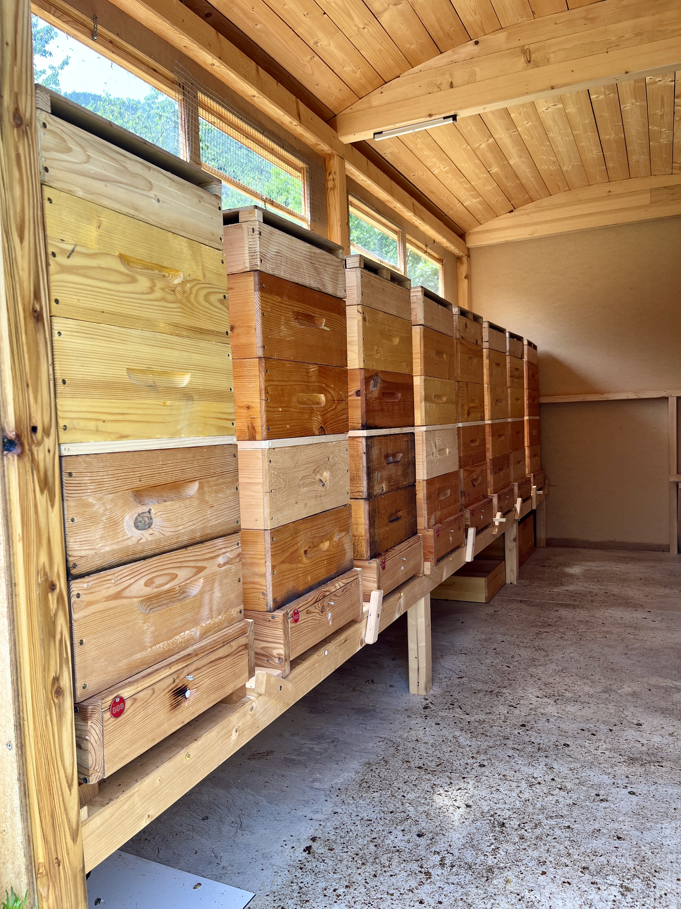
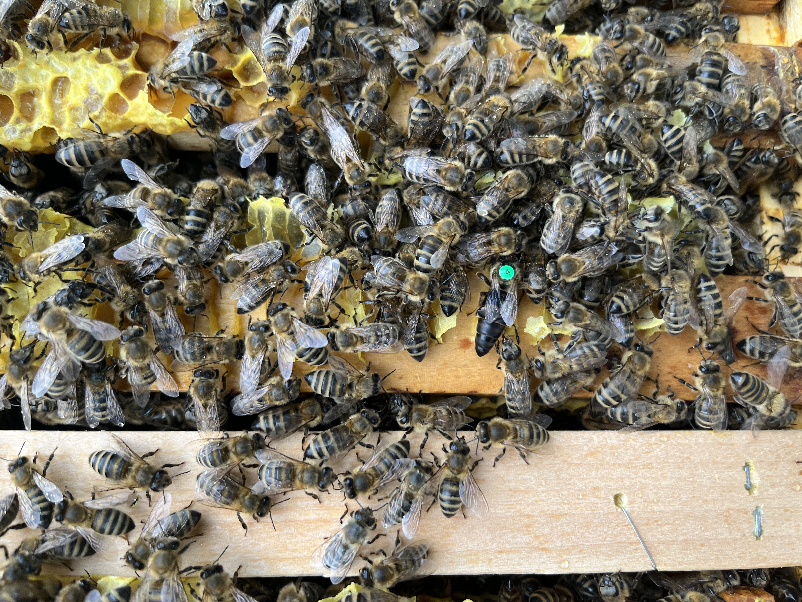
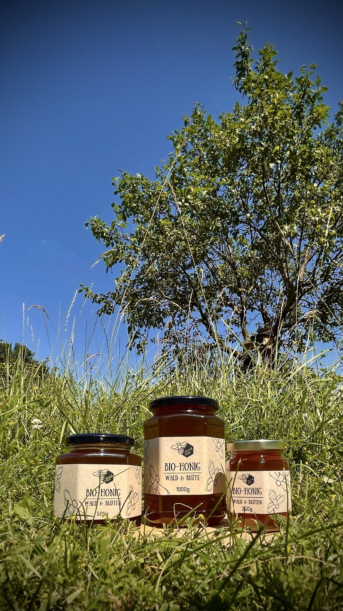
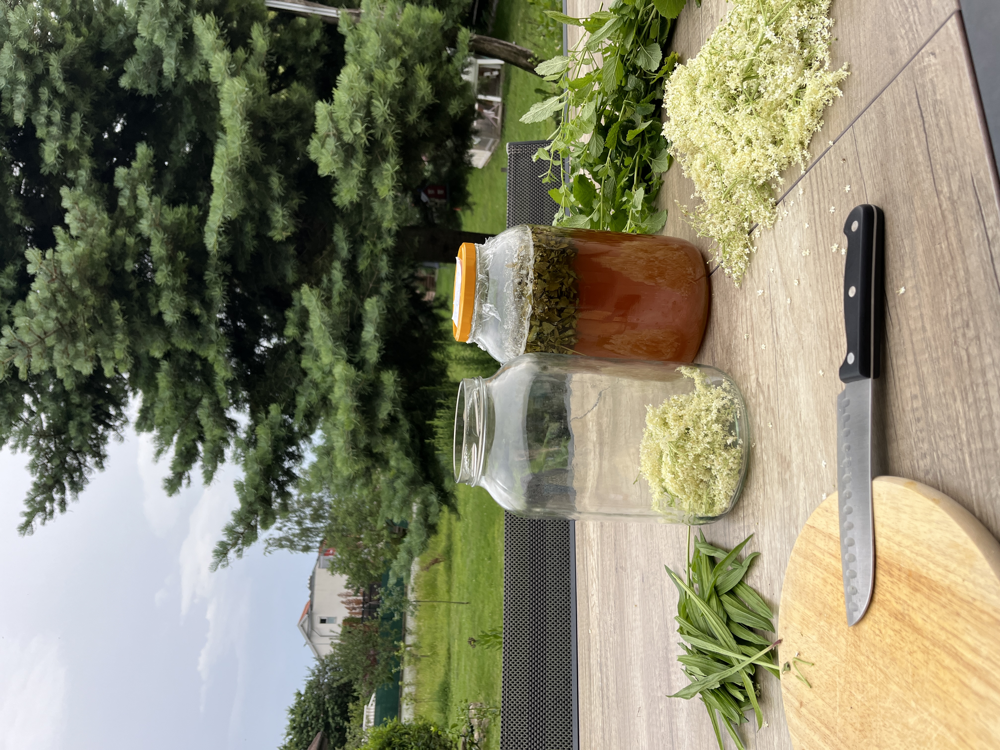

Wesensgemäße Bio-Bienenhaltung
Verzicht auf chemisch-synthetische Mittel und Kunststoffe. Futter und Bienenwachs stammen aus biologischer Herkunft; die Völkerführung erfolgt nach biologischen und biotechnischen Grundsätzen.
Echte Handarbeit aus Saubersdorf. Mit jedem Glas unterstützen Sie die Artenvielfalt und Bestäubung direkt vor Ihrer Haustür.
Bio ist für uns nicht nur ein Siegel, sondern eine Haltung: Jedes Glas entsteht in reiner Handarbeit, von der Völkerpflege bis zur Abfüllung.
Unsere Bienen sichern die Bestäubung von Obstgärten, Wiesen und Wildpflanzen in der Umgebung. Um Wildbienen zu schützen und die Biodiversität zu fördern, setzen wir bewusst auf kleine Standorte mit reichlich Bio- und Wildpflanzen.
Naturbelassener Bio-Honig ist eine reine, unverfälschte Alternative zum Süßen im Alltag, voller natürlicher Aromen unserer Landschaft.

Verzicht auf chemisch-synthetische Mittel und Kunststoffe. Futter und Bienenwachs stammen aus biologischer Herkunft; die Völkerführung erfolgt nach biologischen und biotechnischen Grundsätzen.
Neben der jährlichen Betriebskontrolle durch unsere Bio-Zertifizierungsstelle lassen wir Honigqualität und Bienengesundheit regelmäßig im Labor untersuchen.
Wir arbeiten mit der sanftmütigen, widerstandsfähigen Karnischen Honigbiene („Carnica“), die optimal an das Klima des Schneeberglandes angepasst ist.




Schonend geerntet und kaltgeschleudert, damit der Geschmack der Natur erhalten bleibt.
Kräftig, würzig und aromatisch: Unser dunkler Waldhonig stammt aus den Wäldern der Buckligen Welt und bleibt lange flüssig.
Mild, blumig und sonnig: Gesammelt von unzähligen Bio- und Wildpflanzen, Obstbäumen und Wiesenblumen unserer Region.
Zart-schmelzend und streichfest: Durch schonendes Rühren erhält unser Blütenhonig seine feincremige Konsistenz. Tropft nicht vom Brot!
Der traditionelle „Sauerhonig“ aus feinem Bio-Honig, naturtrübem Bio-Apfelessig und sorgfältig sortierten Kräutern: fein-säuerlich im Geschmack und vielseitig zum Verdünnen oder Verfeinern.
Das natürliche Schutzharz der Bienen, sorgfältig angesetzt und in praktischen Tropfflaschen abgefüllt.
Sanftmütige „Carnica“-Bienen mit Gesundheitszertifikat: Wirtschaftsvölker, Brutableger und Kehrschwärme mit Wirtschaftsköniginnen, dazu saisonale Spezialitäten.
Besuchen Sie uns in Saubersdorf oder rufen Sie uns einfach kurz an. Am besten vorher telefonisch melden, damit wir sicher für Sie da sind!
Claudia und Hans-Jürgen Linzer
Unser Ab-Hof-Verkauf liegt mitten im schönen Schneebergland.